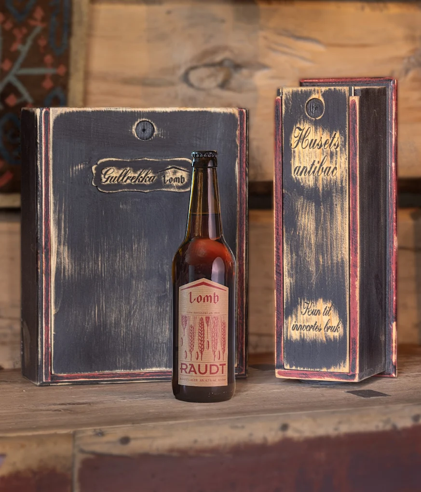

Vår historie
Frå ei gamal løe i Lom til eit av Noregs mest særeigne handverksbrygggeri — med fjellvatn, lokale urter og ei kjærleik til godt lager.
Lom Bryggeri vart starta av ein gjeng som elska godt handverksøl og trudde at Lom var den perfekte staden å lage det — midt i Jotunheimen, med reint fjellvatn rett frå fjellet og ei tradisjon for lokale råvarer som strekker seg langt tilbake.
Ideen tek form
Det heile starta med ein tanke: kvifor finst det ikkje eit skikkeleg handverksbrygggeri i Lom? Fjellbygda hadde alt — reint vatn, eit rikt urtetilfang og eit lokalsamfunn med stoltheit over eigen matkultur. Planlegging byrja i stille, og Grjotheim-garden vart valt som heim for bryggeriet.
Bryggeriet opnar
Lom Bryggeri slo opp dørene i 2016. Dei første ølsortar var enkle lagar brygga på fjellvatn og byggmalt — reindyrka og utan unødvendige tilsetningar. Målet var klart frå starten: lag øl som smakjer av staden det kjem frå. Ljost og Raudt vart dei første fast sortiment-ølane, og tok raskt imot gode tilbakemeldingar frå lokalbefolkninga og tilreisande.
Fjellnaturen som oppskrift
Rundt Lom finst det eit rikt tilfang av ville urter — fjellkvann, mjødurt, einer, krekling og bjørkeskot. Bryggarane begynte å eksperimentere med å bruke desse i øl, og det opna seg ein heilt ny smaksverden. Tradisjonell norsk bryggjekultur — der pors og einer var vanlege ingrediensar lenge før humla kom — fekk nytt liv. Kvar urt er ei forteljing om dalens natur, og kvar smak er ein stad å vere.
Frå to til tjue
Det gjekk ikkje lenge før sortimentet voks. Bryggarane ville hedre fjellheimen sin rikdom — og personane og stadene som høyrte til. Øl vart oppkalla etter lokale legender som Jo Gjende og Peer Gynt, etter fjellruter som Høgruta, og etter fjelltoppen Galdhøpiggen (2469 moh.). I dag tel sortimentet over 20 unike handverksøl, frå lettdrikkelige lagrar til kraftige vinterlagar.
Låven vert til pub
Bryggeriet fann raskt sin heim i den historiske låven på Grjotheim. Den romslege låven vart omgjort til ein pub der gjestene kan smake ølane på kran, og ein gardssalg der dei kan kjøpe med seg favorittane heim. Puben er ikkje berre eit skjenkested — det er eit møteplass for lokale og tilreisande, eit levande rom midt i det som eingong var arbeidsstastad på garden.
Handverk frå fjellbygda
I dag er Lom Bryggeri eit heiltidsbrygggeri med bryggar, pub, gardssalg og ølsmaking som oppleving. Vi bryggjer med tolmod, nyfikne og respekt for råvarene — og vi er stolte av å vere ein del av Lom sitt kulturliv. Kvar flaske er eit utsnitt av fjelldalen vi er glade i å kalle heimen vår.
"Brygga med tolmod, reint fjellvatn og lokale råvarer — midt i hjartet av Jotunheimen."